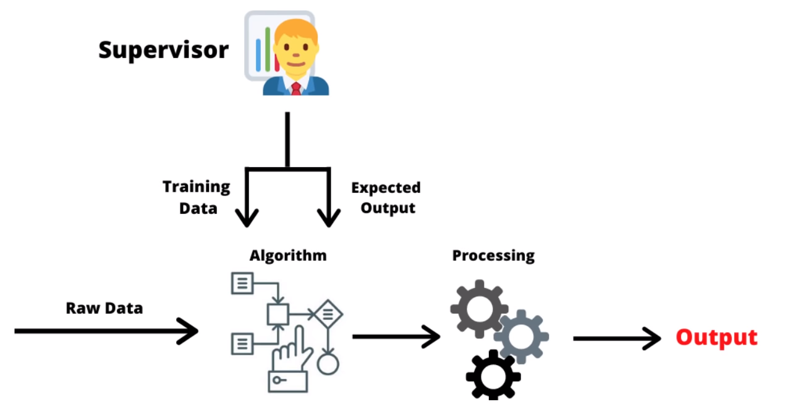

Documentation
Installation
Le chatbot à besoin de modules en plus qui ne sont pas intégrées dans python, ces modules sont essentiellement destinées à simplifier le programme. Il faut donc installer :
-nltk avec pip install nltk
-tflearn avec pip install tflearn
-tensorflow avec pip install tensorflow
si vous disposé d'un GPU nvidia qui contient des cudas cores vous pouver innstaller tensorflow-gpu avec pip isntall tensorflow-gpu cela permeterra d'utilisé la puissance de calcule de votre gpu pour entrainée le chatbot
Nous vous recommandons d'utiliser google colab et d'activé l'accelration par GPU ou TPU
Démarche
Le principe du chat bot est de calculer la probabilité que la réponse choisie soit juste.
Pour cela on analyse tout les mots qui sont dans la phrase donné pour pouvoir ensuite regarder combien de mot sont en commun dans la phrase donné et dans les phrases du data qui sert à entrainée l'IA. L'IA va permettre de comprendre les racines des mots de savoir que gentillement peu vouloir dire gentillement. L'IA va elle même deviné les règles ce qui va lui permettre de donné une réponse la plus approprié possible
Le fonctionnement de l'ia
Pour ce chat bot le model choisie d'IA est le supervised learning.
Le supervised learning est une technique d'entrainement d'IA qui conssiste à donner les entrés et les sorties qui corresponde aux entrés pour que l'IA devine par elle même les règles.
